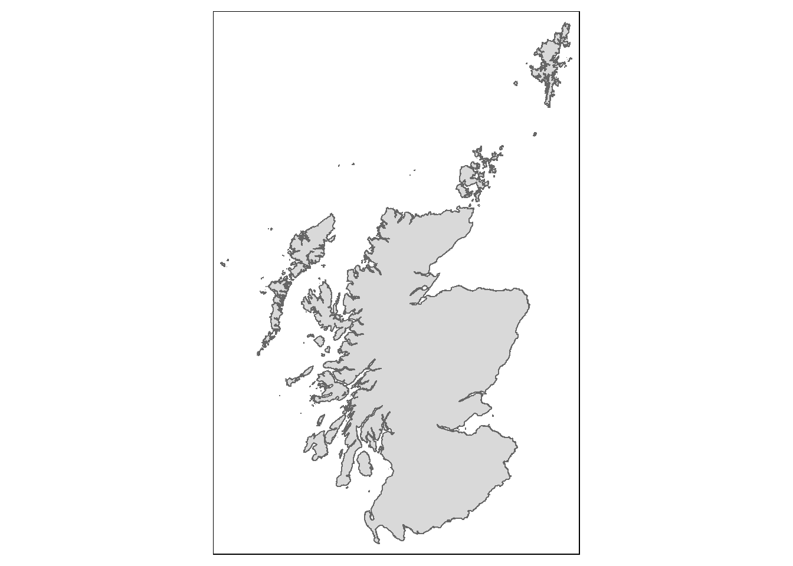
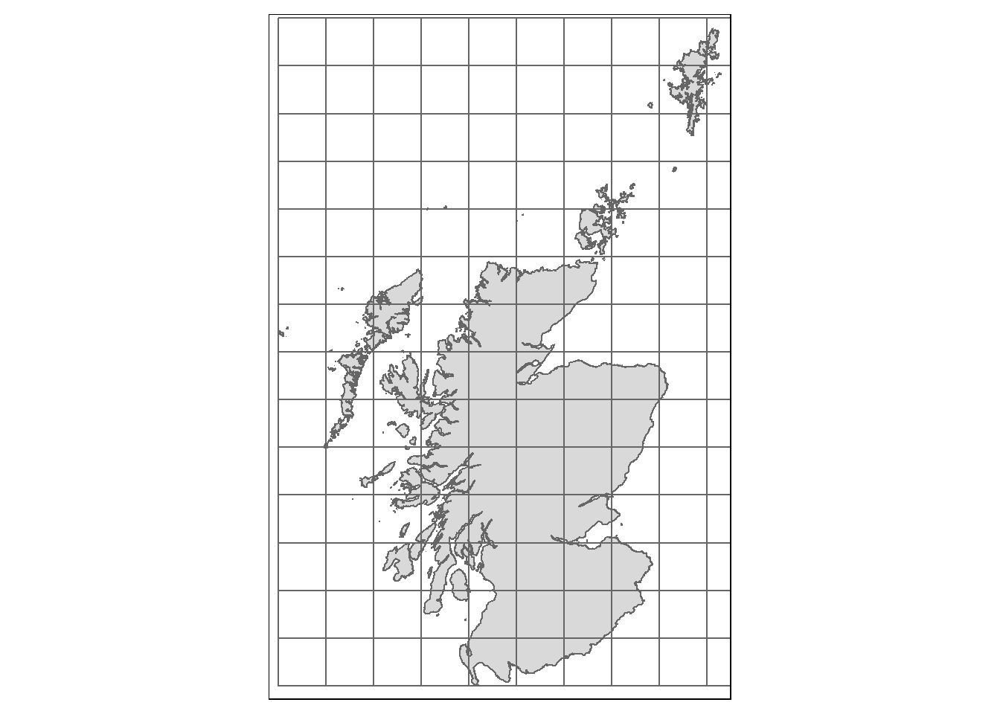
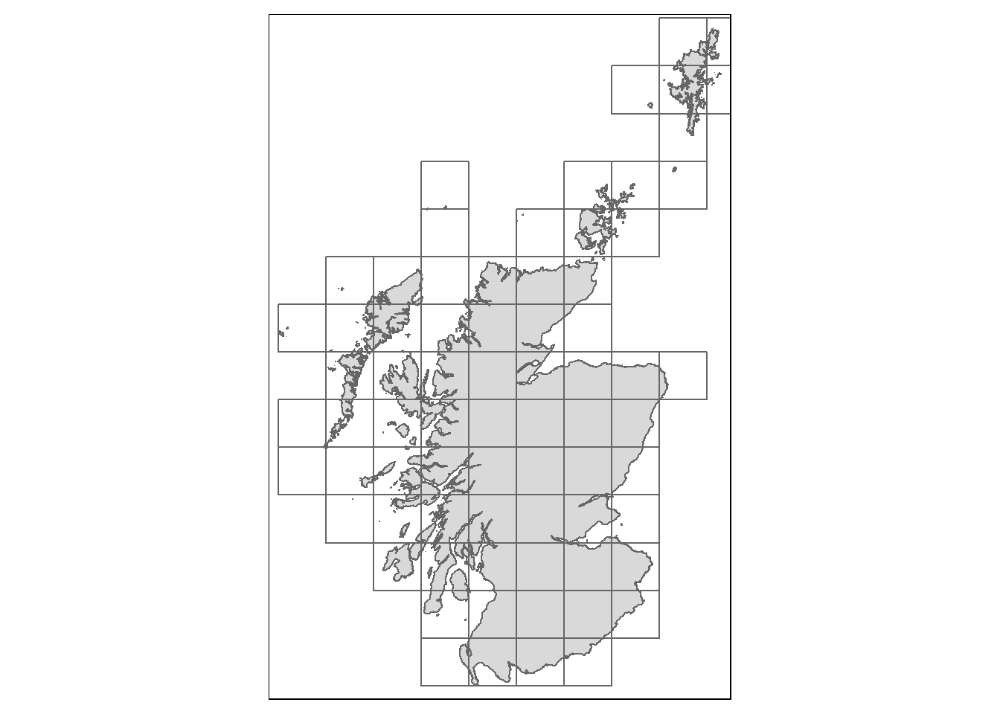
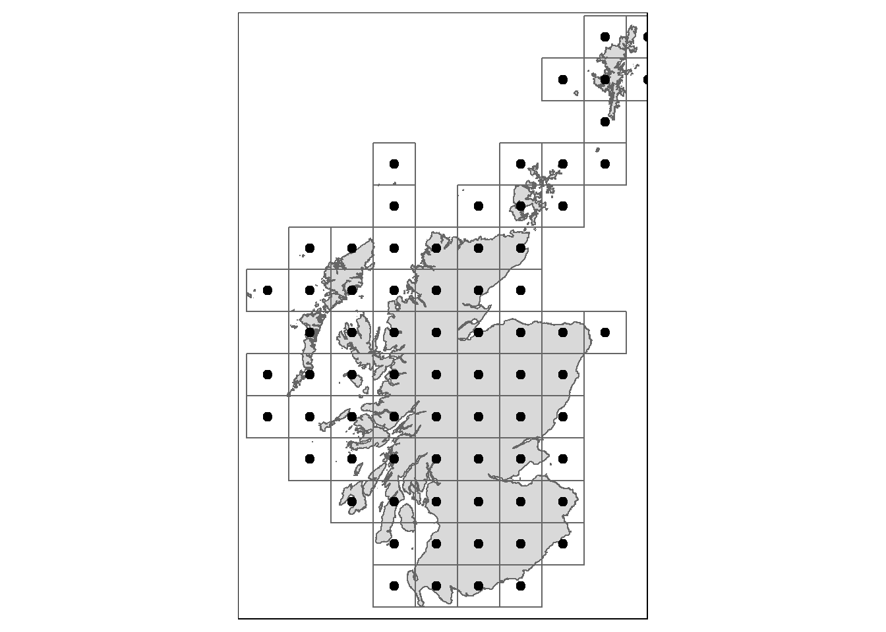

Recently I have been using the sf and tmap packages a lot and I thought I would come back to finish a draft post I started a while ago.
As part of a project a while ago, I needed to create a square grid across Scotland and produce centroids for each. We start by loading the packages we’ll need and the shapefile.
library(sf)
library(tmap)
scot <- st_read("scot_shapefile/scot.shp")We can see what this looks like with a quick plot.
tm_base <- tm_shape(scot) +
tm_polygons()
tm_base
Next we define the size of the grid (in metres) and use st_make_grid() to create the grid based on the bounding box.
size <- 50000 # 50km squares to speed things up
# create grid
scot_grid <- st_make_grid(scot, square = TRUE, cellsize = c(size, size)) %>%
st_sf()We can plot this to see what it looks like.
tm_base +
tm_shape(scot_grid) +
tm_borders() # just the borders of the grid cells
Now we have a choice. We can calculate all the centroids and then keep only those that intersect with Scotland or find the intersection first. Here we use st_filter() to subset the grid to just those squares that intersect with Scotland.
scot_only_grid <- st_filter(scot_grid, scot)
tm_base +
tm_shape(scot_only_grid) +
tm_borders() # just the borders of the grid cells
Now we can calculate the centroids and plot everything to demonstrate.
# calculate centroids for each square in the grid
grid_points <- st_centroid(scot_only_grid)
# with tmap
tm_base +
tm_shape(scot_only_grid) +
tm_borders() +
tm_shape(grid_points) +
tm_dots(size = 0.25) # making them a little more noticeable